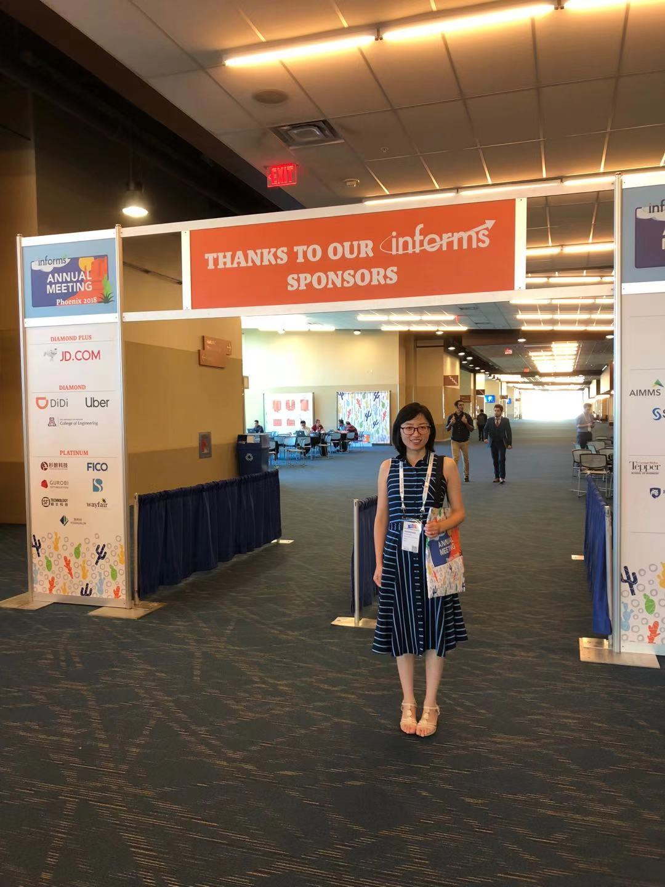

|
Shanshan Wang
|
 |
Hi, I am a Postdoctoral Fellow in the Department of Decision Science of HEC Montréal, GERAD and CIRRELT since Aug. 2020, where I am working with Professor Erick Delage and Professor Leandro C. Coelho from Department of Operations and Decision Systems of Université Laval.
Prior to this, I obtained my Ph.D. in Management Science and Engineering at Beijing Institute of Technology in June 2020, and Master in Applied Mathematics at Beijing Institute of Technology, China in June 2015. During my Ph.D., I visited the Department of Industrial Engineering and Management Sciences and Professor Sanjay Mehrotra at Northwestern University, US from Sep. 2017 to Sep. 2019.
Research areas: Data-driven decision-making under uncertainty, decomposition scheme for large-scale MILP, healthcare operations management, and urban transportation and logistics.
Contact:
LACED-03880
3000 Chem. de la Côte-Sainte-Catherine, Montréal, QC H3T 2A7
Email: shanshan.wang@hec.ca
|
News
- I will present our work in the session “ Contextual optimization under uncertainty ” in 2022 Optimization Days !
Selected Publications
See my Google Scholar profile for more details.
Journal Papers
Shanshan Wang, Jinlin Li, Sanjay Mehrotra, “A Solution Approach to Distributionally Robust Joint-Chance-Constrained Assignment Problems,” INFORMS Journal on Optimization, 2022, 4(2):125-147.
Shanshan Wang, Erick Delage, Leandro C. Coelho, “Data-driven stochastic vehicle routing
problems with decision-dependent uncertainty using non-parametic methods,” working paper, 2022.
Menglei Ji, Shanshan Wang, Chun Peng, Jinlin Li, “Two-stage robust telemedicine assignment problem with uncertain service duration and no-show behaviours,” Computers & Industrial Engineering, 2022, 169:108226.
Shanshan Wang, Jinlin Li, Sanjay Mehrotra, “Chance-Constrained Multiple Bin Packing Problem with an Application to Operating Room Planning,” INFORMS Journal on Computing, 2021, 33 (4), 1661-1677.
Shanshan Wang, Erick Delage, “A Column Generation Scheme for Distributionally Robust Multi-Item Newsvendor Problems” , under review, 2022.
Bing Sun, Shanshan Wang, “Maximum principle for optimal distributed control of viscous weakly dispersive Degasperis–Procesi equation” , Mathematical Methods in the Applied Sciences, 2015, 38(18): 4576-4586.
Conference Papers
Shanshan Wang, Jinlin Li, C. Peng, “Distributionally robust chance-constrained program
surgery planning with downstream resources,” Proceeding of the 14th International Conference on
Service Systems and Service Management, 2017. DOI: 10.1109/ICSSSM.2017.7996258.
Presentations
Something to update...
|